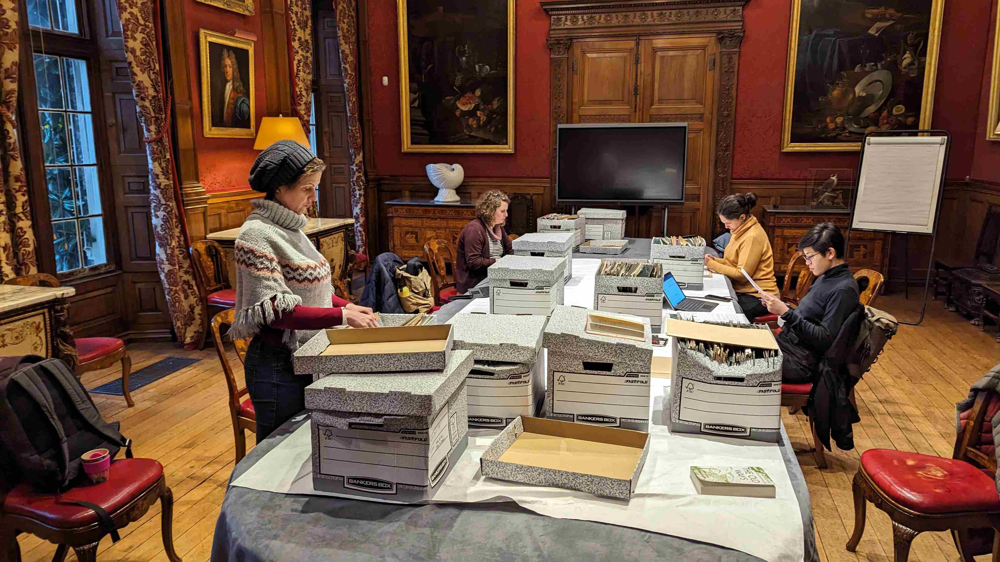
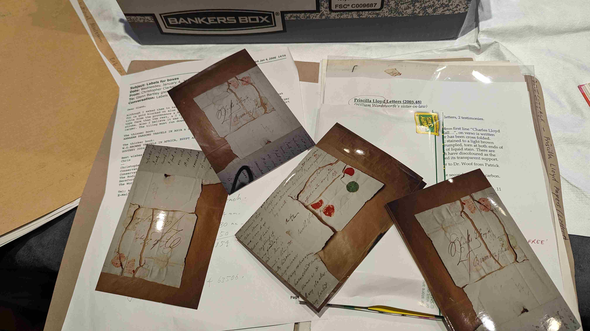
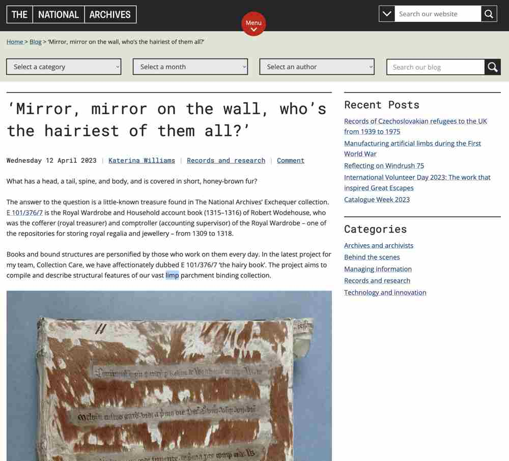

The Home of ResearchSpace
contact: info@kartography.org
contact: info@kartography.org
Christopher Clarkson was well known throughout the conservation community and beyond. During his career he worked for the Library of Congress, Walters Art Museum, The Bodleian Library, Oxford, West Dean College, and as an independent contractor he worked with numerous archives and libraries. He was part of a team involved in the restoration of manuscripts after the 1966 floods in Florence. Crucially, he shared his knowledge in numerous lectures, articles and books around the world. He died in 2017 leaving project files, lecture scripts, practice notes, pictures and videos which provide a wealth of informaiton for book conservators. Clarkson was partiuclarly important because he was an innovator and advanced the discipline.
|  |
| The TNA Team working through the Christopher Clarkson archives |
The long term strategy is to draw out practical conservation information building a library of methods and techiques. These will be linked to real case studies with appropriate notee and these examples expanded over time with relations to other knowledge bases, including the TNA system. These will then also be linked to historical Information providing a historical context for the work, but also talk to current conservation and its overall progression.
|  |
| Items from a Clarkson commission from the Wordsworth Trust |
The National Archives are also working on a Limp Parchment conservation project which could be intergated into the knowledge base in the future.

Blog by Kat Williams
Click here to learn more about the TNA Limp Parrchment conservation program